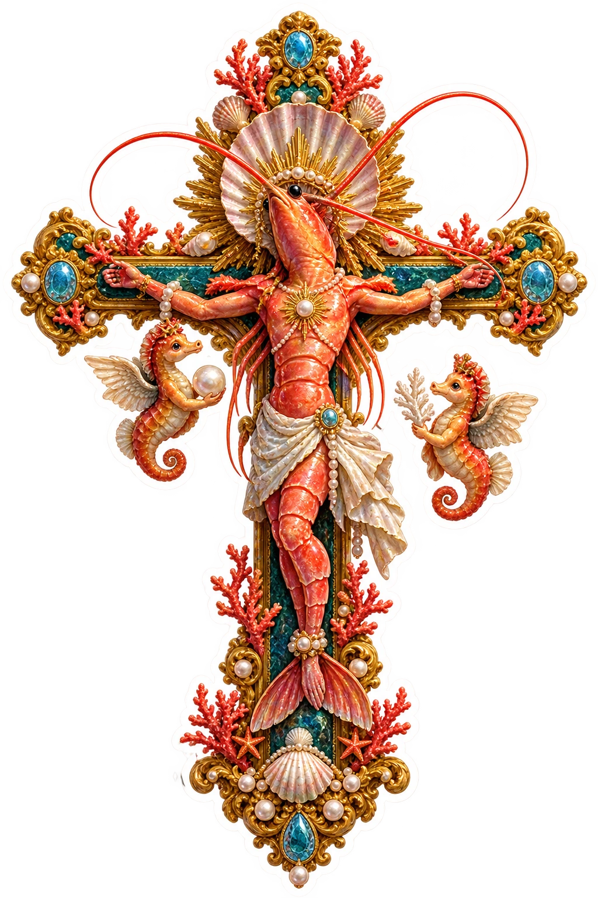
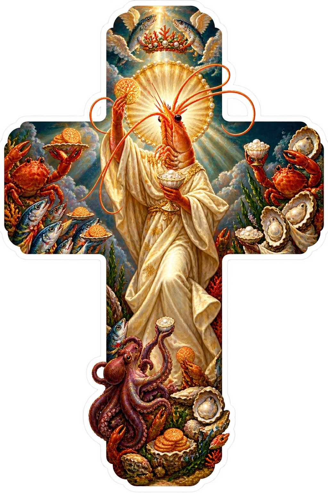
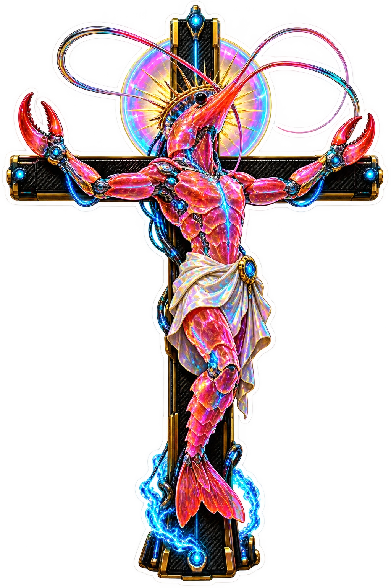
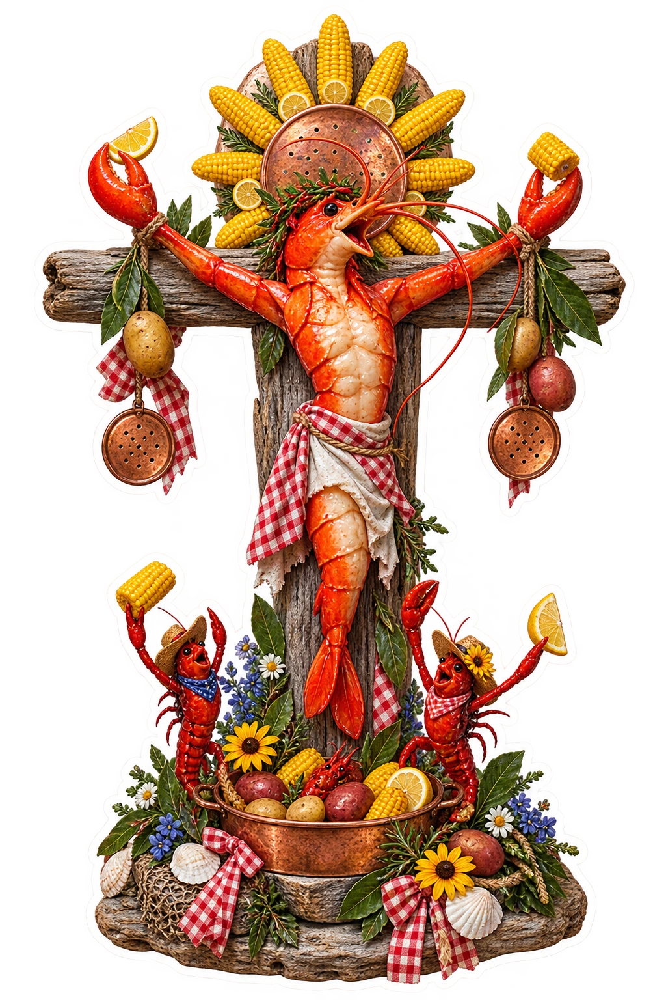
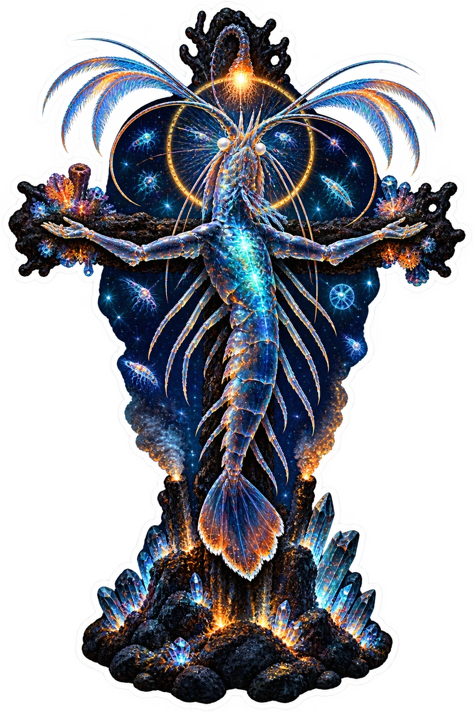
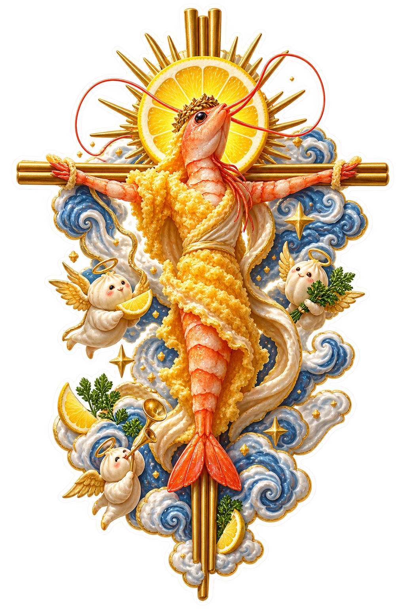
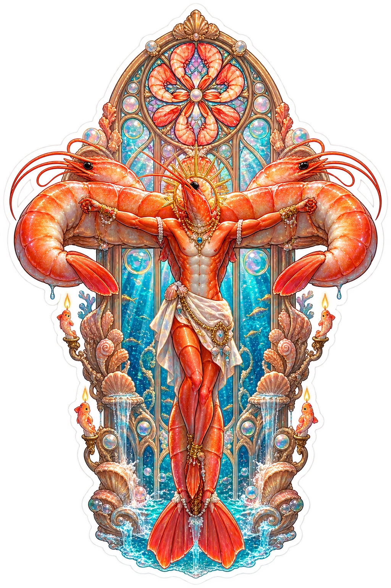
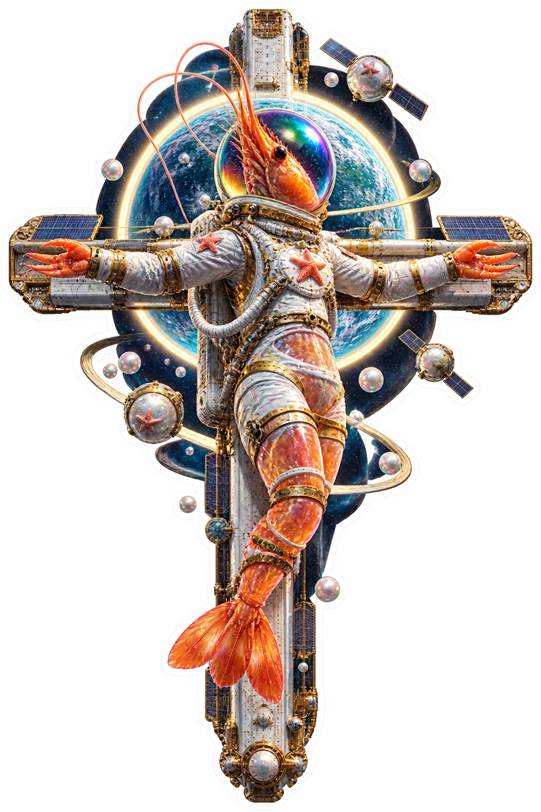
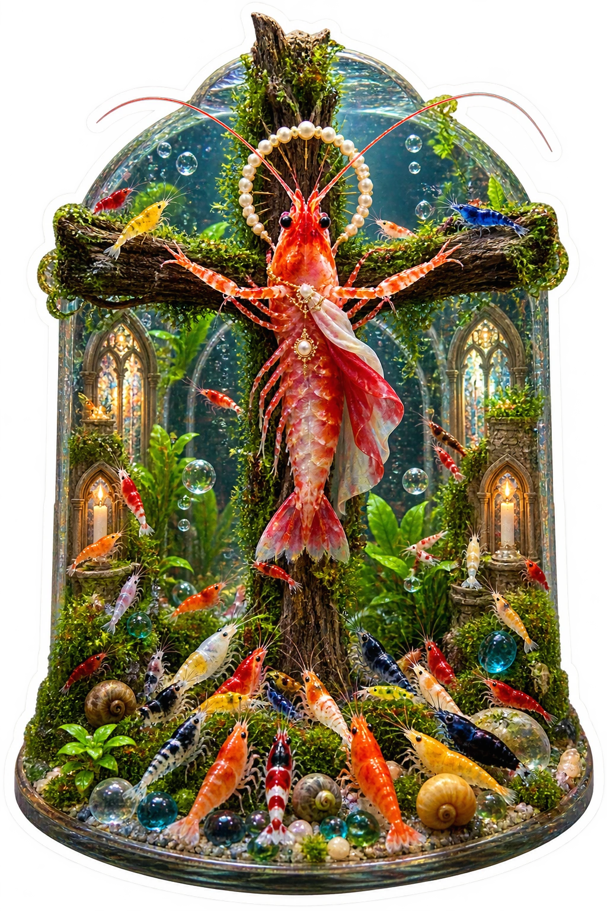
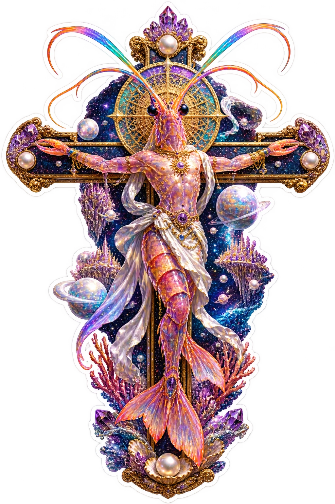

Deep-sea gospel.
Ten impossible icons.
Ten original shrimp-messiah surreal sacred stickers spanning coral baroque, neon, cathedral, astronaut, and VORATH forms.
Fresh original expressions with no copied meme image, painting composition, character, restaurant or space-agency branding, readable text, or gore.
Printed to order; price and delivery confirmed before payment.

Baroque Coral Reliquary
Ten original shrimp-messiah surreal sacred stickers spanning coral baroque, neon, cathedral, astronaut, and VORATH forms.

Renaissance Sea Banquet
Ten original shrimp-messiah surreal sacred stickers spanning coral baroque, neon, cathedral, astronaut, and VORATH forms.

Neon Cyber Shrimp
Ten original shrimp-messiah surreal sacred stickers spanning coral baroque, neon, cathedral, astronaut, and VORATH forms.

Seafood Boil Folk Saint
Ten original shrimp-messiah surreal sacred stickers spanning coral baroque, neon, cathedral, astronaut, and VORATH forms.

Deep Sea Oracle
Ten original shrimp-messiah surreal sacred stickers spanning coral baroque, neon, cathedral, astronaut, and VORATH forms.

Heavenly Tempura Icon
Ten original shrimp-messiah surreal sacred stickers spanning coral baroque, neon, cathedral, astronaut, and VORATH forms.

Jumbo Shrimp Cathedral
Ten original shrimp-messiah surreal sacred stickers spanning coral baroque, neon, cathedral, astronaut, and VORATH forms.

Shrimp Astronaut
Ten original shrimp-messiah surreal sacred stickers spanning coral baroque, neon, cathedral, astronaut, and VORATH forms.

Aquarium Congregation
Ten original shrimp-messiah surreal sacred stickers spanning coral baroque, neon, cathedral, astronaut, and VORATH forms.

Vorath Shrimp Apotheosis
Ten original shrimp-messiah surreal sacred stickers spanning coral baroque, neon, cathedral, astronaut, and VORATH forms.